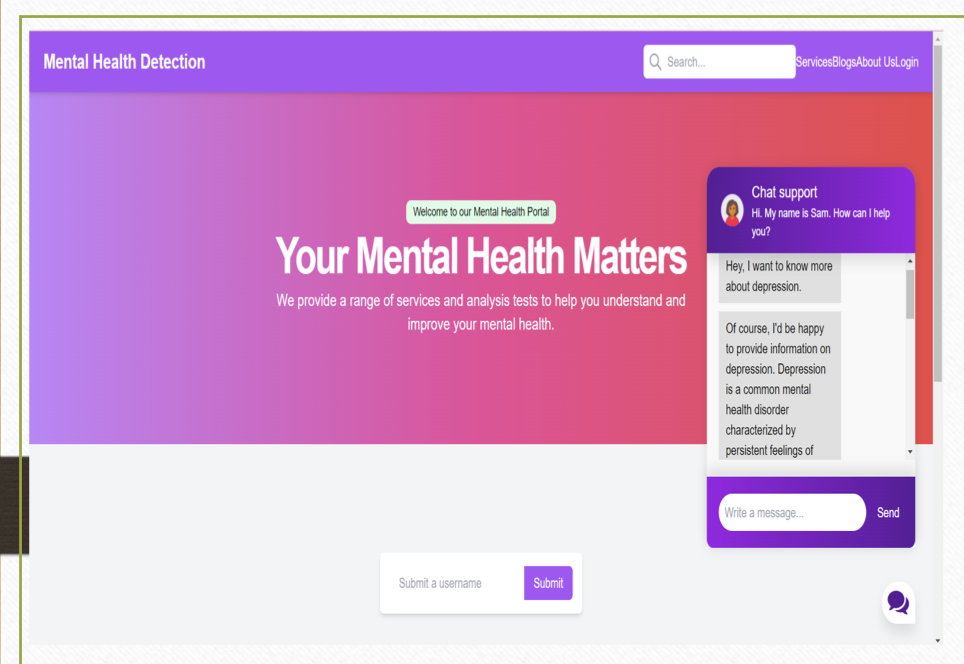
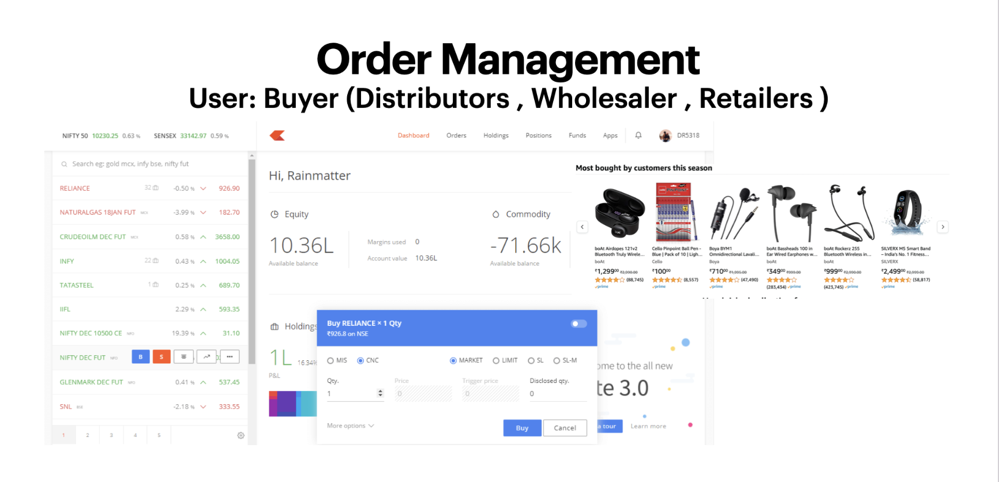
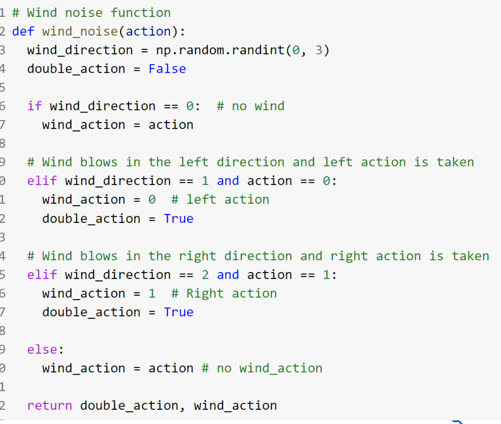
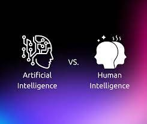
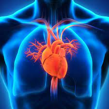
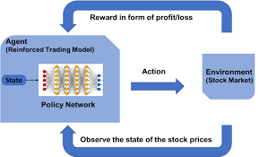
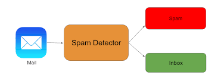

Mental health Prediction through Screeing and Chatbot Interventions

This project offers a cutting-edge, affordable mental health platform powered by machine learning. It analyzes diverse data, from files and questionnaires to APIs, to detect mental health issues. Users receive personalized insights through age-specific questions and unique factors like music preferences and screen time. An emotionally intelligent chatbot then provides tailored support, adapting to the user’s emotional state for meaningful interaction.
Pharma Supply Chain Trading Platform

This project delivers a comprehensive UX prototype for a pharma supply chain trading platform, designed to streamline the interaction between manufacturers, distributors, and logistics providers. The platform addresses key challenges in pharmaceutical distribution, focusing on real-time order tracking, cold chain monitoring, and supply chain analytics.
AI ChatBot
Conversational AI Model This project showcases my work on building a sophisticated Conversational AI model as part of my Artificial Intelligence assignment. Leveraging the power of TensorFlow and the tflearn library, I employed Natural Language Processing and Neural Network concepts to construct an AI contextual chatbot.
Attendance Marking Using Facial Recognition
Welcome to the Face Detection and Data Addition System! This robust solution is designed for detecting faces in video, verifying them against a predefined dataset, and updating a CSV file with relevant data.
React Weather App Project
![Project Image]()
This project explores the application of blockchain in open science, showcasing its potential as an infrastructure. The focus is on secure transactions using blockchain for financial transactions between friends.
Predictive analytics for UI/UX development

Leveraging predictive analytics to enhance UI/UX design allows for a deeper understanding of user behavior and more effective design decisions. By analyzing user interaction data, the system uncovers patterns and predicts engagement, helping to optimize layout, navigation, and content.
cryptocurrency-prediction
Predicting the crypto currency using Neural Network.
RL Algorithms with Real-World Uncertainties

Enhanced agent decision-making for Q-learning and ActorCritic algorithms by introducing real-world uncertainties such as wind noise and engine failures.
drowsiness Detection
Drowsiness Detector using Python. College Project with all Documents.
chatgpt Comparision

ChatGPT Comparison Detection Project Overview The ChatGPT Comparison Detection Project aims to develop a system that identifies and analyzes comparisons within text data. Leveraging the capabilities of ChatGPT, a state-of-the-art language model, this project offers a solution for detecting and understanding comparative statements.
Face Detection

Face Detecton In Python Using OpenCV.
Heart Failure Prediction

Heart failure is a critical medical condition that requires timely intervention. This project aims to predict heart failure in patients using machine learning algorithms. Early detection can lead to better patient care and outcomes.
Chronic Kidney Disease analysis using data mining classification techniques

This project is a replication of the popular professional networking platform LinkedIn, aiming to emulate its features and functionalities.
Whatsapp GPT

WhatsApp-GPT WhatsApp-GPT is a project that integrates ChatGPT with WhatsApp using a Golang library. The setup involves running WhatsApp from a phone number using the Golang library and concurrently running a dedicated browser in another window to control ChatGPT.
Video Surveillance and tracking system using Facial Recognition

Connect all CCTV cameras to this system to track someone's live location in a premise using facial recognition. It can be also used to maintain records of people entering a premise using their face instead of bio-metrics/cards/manual Entry. This system when used with national criminal database can track criminals and prevent mishaps.
Stock market prediction using Reinforcement Learning

Trying out reinforcement agents to predict stock market for 3 interested companies.
Student login page
studentActivity
All Purpose Student Activity Website
Spam Mail Detector using ML

This project is a spam email detection system built using machine learning algorithms from scikit-learn. Spam emails can be a significant problem, and having an automated system to detect and filter them out can be invaluable.
E-commerce website
This project consists of two Flask applications that leverage ImageAI's image prediction algorithms and object detection models for object recognition and analysis in images and videos. The apps, Image Object Recognition Flask Application and Video Object Detection Flask Application, provide an intuitive platform for users to explore, analyze, and extract information from visual content.
Mini Chatgpt Model
minGPT is a PyTorch re-implementation of GPT, covering both training and inference. The primary goals of minGPT are to be small, clean, interpretable, and educational. Unlike some sprawling GPT implementations, minGPT maintains simplicity, with the entire codebase consisting of approximately 300 lines of code (refer to mingpt/model.py). The core concept involves a sequence of indices fed into a Transformer, producing a probability distribution over the next index in the sequence. The implementation focuses on clever batching, both across examples and sequence length, for efficiency.